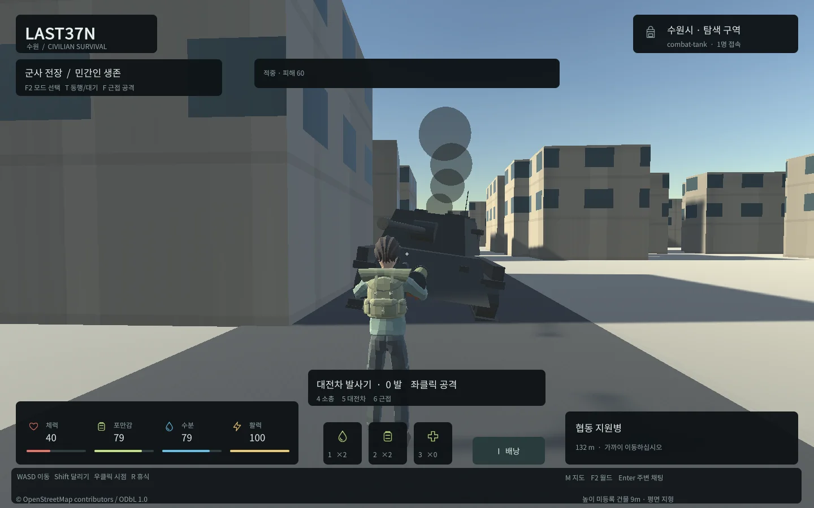

Tracefolio REPORTS & ISSUES
Tracefolio REPORTS & ISSUES전투 장비 FBX 축과 전차 시각 효과 초기화 예외 수정
해결실제 실행에서 발견한 장비 방향/헬멧 높이와 MaterialPropertyBlock 초기화 예외를 수정하고 재검증했습니다.
작업 결과
FBX 임포트 변환을 보존하고 네이티브 객체 생성을 Awake로 옮긴 뒤 Windows4종·실제 Web 전투와 생존 회귀를 통과했습니다.
변경 내용
재현 조건
Unity6000.0.83f1 Windows D3D11/WebGL, Blender5.2.3 LTS, 실제 LAST37N 전투 프로토타입
재현 순서
Blender FBX 장비를 캐릭터 뼈대에 부착한 실제 Windows/Web 빌드를 실행하고, 전차를 생성한 Windows 런타임 로그를 확인합니다.
기대 동작
장비의 임포트 축/높이가 유지되고 전차 시각 효과 초기화가 Unity 예외 없이 실행됩니다.
실제 동작
초기 버전은 소총이 수직/헬멧이 떠 있었고, 후속 전차 효과는 생성자에서 MaterialPropertyBlock 생성 예외를 기록했습니다. 수정 뒤 실제 실행과 로그에서 정상 상태를 확인했습니다.
원인
FBX 임포트 객체 회전을 identity로 덮어쓴 변환 코드와 MonoBehaviour 필드 초기화에서 Unity 네이티브 객체를 생성한 코드가 각각 확인됐습니다.
적용 내용
재현1: CombatAsset에서 FBX 객체의 회전을 identity로 바꾸면서 실제 렌더링의 소총이 수직이고 헬멧이 떠 있었습니다. 컨테이너와 임포트 모델을 분리하여 FBX의 하위 변환을 보존했습니다.
재현2: Windows 실제 실행 로그에 UnityException: CreateImpl is not allowed to be called from a MonoBehaviour constructor가 나타났고 호출 대상은 CombatTankVisual의 MaterialPropertyBlock 필드 초기화였습니다. 생성 위치를 Awake로 옮겼습니다. 종료 코드만 확인하던 검증 도구도 해당 예외 로그를 실패로 처리하게 변경했습니다.

검증
Windows 보병·근접·전차·좀비4실행에서 예외0, 모델/리그/크기 통과. 소총 전방1.1575m, 헬멧 상단1.975m, 전차 높이3.125m·길이7.306m를 실제 임포트 메시에 대해 확인했습니다. Web 전체 전투·협동 시나리오와 기본 localhost8788에서 엔진 오류0을 확인했습니다. 실패 화면/로그와 수정 후 결과를 docs/qa/combat/attempt-model-01, attempt-runtime-03, runtime, browser, live.json에 보존합니다. 교훈은 기존 전역의 로그/실행 검증 지침에 포함되어 전역 변경 없음이며 상세 근거는 프로젝트에 유지합니다.
남은 사항
고급 애니메이션 제작·목표 장치 성능 측정은 별도 확장 범위입니다.
작업 시간
- 제안 시간: 전체 전투 확장90~150분 안에서 수정·검증. 시작2026-10-30 22:20:41 KST.
- 실제로 완료된 시간: 수정·검증 기록 2026-10-30 23:41:36 KST. 전체 종료/배포 시각은 최종 보고와 전달 기록에 별도 표기합니다.
- XERJ: 미사용 — XERJ 미제공, rg와 실제 소스/Unity 로그·실행 화면으로 확인했습니다.